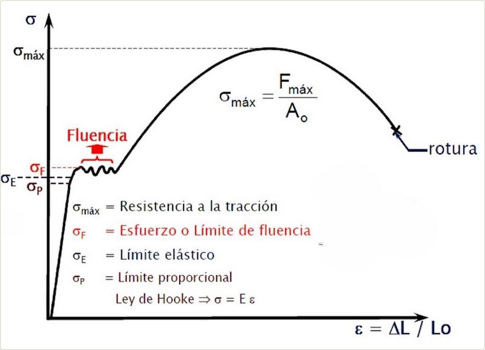
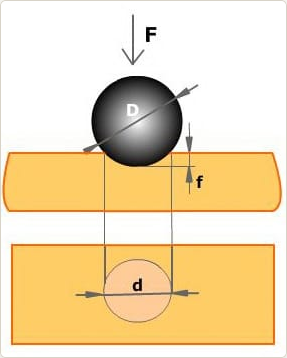
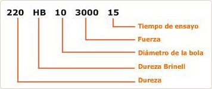
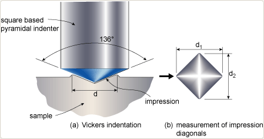
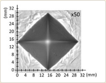
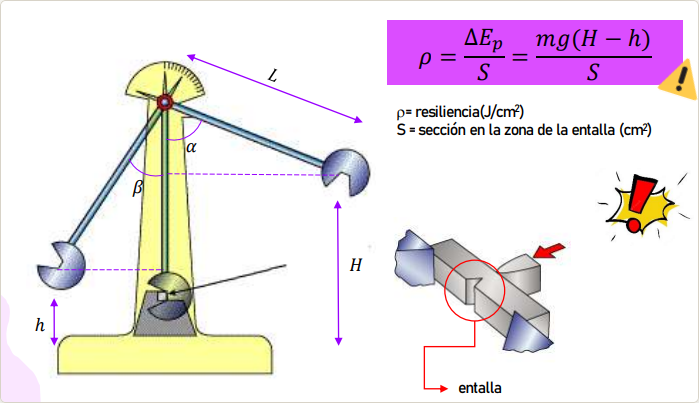

y Fabricación
🎯 Objetivos de aprendizaje
- Interpretar la curva tensión-deformación (\(\sigma\)-\(\varepsilon\)) y localizar zonas elástica y plástica, límite elástico y rotura.
- Aplicar la ley de Hooke \(\sigma = E\cdot\varepsilon\) para calcular alargamientos y tensiones.
- Calcular la dureza Brinell (HB) y Vickers (HV) con su designación normalizada completa.
- Calcular la resiliencia mediante el ensayo Charpy y justificar la fragilización.
- Justificar la elección de tratamientos térmicos (temple, revenido, recocido, normalizado) según propiedades deseadas.
- Relacionar técnicas de fabricación (conformado, mecanizado, unión) con el material y su aplicación.
- Argumentar la sostenibilidad en la elección de materiales (ACV, reciclabilidad, huella).
El ensayo de tracción es la prueba mecánica más importante para caracterizar un material metálico. Consiste en someter una probeta normalizada a una fuerza axial creciente hasta su rotura, midiendo en todo momento la fuerza aplicada y el alargamiento producido. A partir de esos datos se construye la curva tensión-deformación (σ-ε), que resume el comportamiento elástico, plástico y resistente del material.
En una pregunta teórica no basta con decir que “se estira una pieza”. Conviene indicar que la probeta tiene dimensiones conocidas, que la carga se aplica de forma progresiva y centrada, y que el objetivo es obtener magnitudes como el límite elástico, la resistencia máxima, el módulo de Young y la ductilidad.
📹 Ver ensayo de tracción realMagnitudes fundamentales
La tensión mecánica indica cómo de intensamente está siendo solicitado el material en el interior de su sección. No basta con saber qué fuerza actúa: también importa sobre qué superficie se reparte. Por eso dos probetas sometidas a la misma fuerza no trabajan igual si una tiene una sección mayor que la otra.
- σ es la tensión nominal o tensión media que soporta la probeta.
- F es la fuerza axial aplicada durante el ensayo, medida en N.
- A₀ es el área de la sección transversal inicial de la probeta, normalmente en mm².
- La tensión suele expresarse en Pa, aunque en materiales es mucho más habitual trabajar en MPa.
Interpretación física: si la tensión aumenta, el material está soportando una mayor carga interna por cada unidad de superficie. Conviene recordar que 1 MPa = 1 N/mm², una equivalencia muy útil cuando la sección viene dada en milímetros.
La deformación unitaria mide cuánto cambia la longitud de la probeta en relación con su longitud inicial. Es una medida relativa: no dice solo cuántos milímetros se alarga, sino qué proporción representa ese alargamiento respecto al tamaño original de la pieza.
- ε es la deformación unitaria.
- ΔL es la variación de longitud que experimenta la probeta.
- L₀ es la longitud inicial antes de aplicar la carga.
- L es la longitud de la probeta cuando está cargada.
- Es una magnitud adimensional, aunque se expresa muchas veces en tanto por uno o en %.
Interpretación física: una deformación de 0,002 significa que la probeta se ha alargado un 0,2 % de su longitud inicial. Ese paso de valor decimal a porcentaje debe explicarse bien para no cometer errores al interpretar la curva σ-ε.
En la primera parte del ensayo, mientras el material trabaja en la zona elástica, la tensión y la deformación guardan una relación lineal. Eso significa que si duplicamos la tensión, también se duplica la deformación, siempre que todavía no se haya superado el límite elástico.
- σ es la tensión aplicada.
- ε es la deformación unitaria producida.
- E es el módulo de Young, que se mide en Pa o, más habitualmente, en GPa.
- La expresión solo es válida mientras el material no haya entrado en deformación plástica, es decir, mientras σ < σE.
Interpretación física: E es una medida de la rigidez. Un valor alto de E significa que el material se deforma poco aunque la tensión aumente; por eso se dice que es más rígido.
El coeficiente de seguridad compara la capacidad resistente del material con la tensión que realmente soportará en servicio. Sirve para diseñar con margen y evitar que una pieza trabaje demasiado cerca de su límite admisible.
- σlímite es la tensión que tomamos como referencia resistente. En piezas estáticas suele usarse el límite elástico.
- σtrabajo es la tensión real con la que la pieza funcionará normalmente.
- El coeficiente no lleva unidades porque es el cociente entre dos tensiones.
Interpretación física: si Cs = 2, el material podría soportar el doble de la tensión de trabajo antes de alcanzar la tensión límite escogida. En la práctica, cuanto más crítico sea el servicio, mayor margen de seguridad se exige.
El alargamiento porcentual expresa cuánto se ha deformado permanentemente la probeta cuando ya se ha roto. Es un dato muy útil para valorar la ductilidad, es decir, la capacidad del material para deformarse antes de fracturarse.
- Lf es la longitud final de la probeta tras la rotura.
- L₀ es la longitud inicial de referencia.
- Se multiplica por 100 para expresar el resultado en porcentaje.
Interpretación física: un valor alto de A% indica que el material ha sido capaz de deformarse mucho antes de romper, lo que suele asociarse a comportamiento dúctil. Un valor muy bajo apunta a una rotura más frágil.
La estricción mide la reducción de la sección transversal en la zona donde se produce la rotura. Mientras el alargamiento porcentual evalúa cuánto se alarga la probeta, la estricción indica cuánto se estrecha el material justo antes de romper. Es, por tanto, otro indicador muy útil de la ductilidad.
- Z% es la estricción porcentual.
- A₀ es el área inicial de la sección transversal.
- Af es el área mínima en la zona de rotura, es decir, la sección final en el cuello de estricción.
- Se multiplica por 100 para expresar el resultado en porcentaje.
Interpretación física: un valor alto de Z% indica que el material reduce mucho su sección antes de romper, lo que corresponde a un comportamiento dúctil. En cambio, los materiales frágiles presentan valores de estricción muy pequeños o casi nulos.
Cómo se realiza el ensayo
La curva σ-ε y sus zonas

![Esquema técnico del ensayo o proceso representado](...)
Zona elástica
- La deformación es reversible: al retirar la carga, la probeta recupera su forma inicial.
- En esta zona se cumple aproximadamente la Ley de Hooke.
- El final de esta región marca el límite elástico.
Zona plástica
- La deformación ya es permanente.
- El material puede seguir soportando carga, pero no recupera su longitud original.
- Se produce endurecimiento por deformación hasta alcanzar la resistencia máxima.
En muchos aceros aparece una zona de cedencia, en la que el material comienza a fluir plásticamente con poca variación de carga. Después, la curva vuelve a subir por el endurecimiento por deformación hasta llegar a la resistencia máxima σR. A partir de ahí se inicia la estricción: la sección real se reduce localmente, la carga soportada disminuye y finalmente se produce la rotura.
Ductilidad y fragilidad
Un material dúctil admite deformaciones plásticas importantes antes de romper, por lo que suele presentar gran alargamiento y cuello de estricción visible. Un material frágil, en cambio, rompe con escasa deformación previa. Esta diferencia se aprecia muy bien en la forma de la curva σ-ε y es un concepto fundamental que debe dominarse.
Si dos materiales tienen valores de σR parecidos, pero uno presenta mucho mayor A%, ese material será más dúctil. Si además tiene una pendiente inicial más alta, también será más rígido.
La dureza expresa la resistencia que ofrece un material a ser penetrado o deformado localmente por otro más duro. En el ensayo Brinell se presiona una bola de carburo de wolframio de diámetro conocido sobre la superficie del material con una carga determinada y durante un tiempo fijado. Después se mide el diámetro de la huella y, con él, se calcula la dureza.
La idea física es sencilla: cuanto menor sea la huella producida por una misma carga, mayor será la dureza del material. Es un método especialmente adecuado para materiales metálicos de dureza baja o media y para piezas relativamente gruesas.

Fundamento del ensayo
En el ensayo Brinell la bola penetra en la superficie y deja una huella circular. Para describir geométricamente esa huella aparecen tres magnitudes que conviene identificar bien. D es el diámetro de la bola penetradora, d es el diámetro de la huella que queda marcada en la pieza y f es la profundidad alcanzada por la penetración. Aunque normalmente se usa la fórmula directa de la dureza y no se calcula f, entender estas letras ayuda a interpretar por qué una huella mayor corresponde a un material menos duro.
La dureza Brinell cuantifica la resistencia del material a ser penetrado por una bola de diámetro conocido. La fórmula relaciona la carga aplicada con la superficie curva de la huella producida. Por eso no interviene solo la fuerza, sino también el tamaño del penetrador y el tamaño final de la marca.
- HB es la dureza Brinell.
- F es la carga aplicada, tradicionalmente expresada en kp.
- D es el diámetro de la bola penetradora, en mm.
- d es el diámetro medio de la huella obtenida, también en mm.
Interpretación física: si para una misma carga la huella sale pequeña, el material ofrece más resistencia a la penetración y el valor de HB aumenta. La convención clásica expresa la dureza en kp/mm².
La dureza Brinell puede entenderse mejor si se parte de su definición física: es la carga aplicada dividida entre la superficie de la huella esférica que deja la bola sobre el material.
En este ensayo, la huella es un casquete esférico, y su superficie lateral puede expresarse como:
Si sustituimos esa superficie en la definición anterior, obtenemos:
La profundidad de penetración f no suele medirse directamente, pero puede obtenerse por geometría a partir del diámetro de la bola y del diámetro de la huella:
Al sustituir esa expresión de f en la ecuación anterior se llega a la forma habitual de la dureza Brinell:
- F es la carga aplicada.
- S es la superficie de la huella.
- D es el diámetro de la bola penetradora.
- d es el diámetro de la huella circular.
- f es la profundidad de penetración de la huella.
Interpretación física: si para una misma carga la huella resulta pequeña, el material se ha dejado penetrar menos y su dureza Brinell será mayor.
Relación entre carga y material
Para que el ensayo sea comparable, la carga no se elige al azar. Se usa la relación F = K·D², donde K depende del material. De forma orientativa:
| Material | Valor típico de K | Comentario |
|---|---|---|
| Aceros | 30 | Requieren cargas altas para producir una huella medible |
| Cobres y latones | 10 | Materiales intermedios |
| Aluminio y aleaciones ligeras | 5 | Materiales más blandos |
Lectura de la designación normalizada

185 HB 5/750/15 significa: dureza 185, bola de 5 mm, carga de 750 kp y tiempo de aplicación de 15 s.
Ventajas, limitaciones e interpretación
- Es un ensayo sencillo y muy representativo para materiales no excesivamente duros.
- La huella es relativamente grande, por lo que promedia bien heterogeneidades superficiales.
- No es adecuado para chapas muy finas, capas endurecidas superficiales o materiales muy duros.
📘 Norma de referencia: ISO 6506-1:2014 (ensayo Brinell) — UNE-EN ISO 6506-1.
El ensayo Vickers también mide dureza por penetración, pero utiliza un penetrador distinto: una pirámide de diamante de base cuadrada y 136° entre caras opuestas. Gracias a ello puede emplearse en materiales muy duros, piezas pequeñas y capas superficiales endurecidas, donde Brinell resulta menos adecuado.
Al aplicar la carga, la pirámide deja una huella cuadrada. Lo que se mide no es un diámetro, sino las dos diagonales de la huella. Su media se usa para calcular la dureza.

Magnitud que se mide
En Vickers la huella no es circular, sino cuadrada, porque el penetrador es una pirámide de diamante. Por eso se miden las dos diagonales de la huella, d₁ y d₂, y se calcula la diagonal media d = (d₁ + d₂)/2. Esa d es la que se introduce en la fórmula. Si la diagonal media es pequeña para una misma carga, significa que el material ha resistido mejor la penetración y, por tanto, es más duro.
La fórmula de Vickers transforma la relación entre la carga aplicada y el tamaño de la huella en un número de dureza. El factor 1,8544 procede de la geometría del penetrador piramidal normalizado de 136°.
- HV es la dureza Vickers.
- F es la carga aplicada, normalmente en kp.
- d es la diagonal media real de la huella, expresada en mm.
- La diagonal aparece al cuadrado, por lo que cualquier error de medida afecta mucho al resultado final.
Interpretación física: igual que en Brinell, una huella menor indica un material más duro. Aquí es especialmente importante no confundir la diagonal observada en la imagen con la diagonal real, sobre todo si el enunciado da aumentos de microscopio.
La dureza Vickers también se entiende a partir de su definición general: es la carga aplicada dividida entre la superficie de la huella producida por el penetrador. En este ensayo, esa huella corresponde a una pirámide de diamante de base cuadrada y ángulo normalizado de 136°.
La geometría del penetrador hace que la superficie de la huella pueda expresarse en función de la diagonal media medida al microscopio:
Si sustituimos esa expresión en la definición de dureza, obtenemos:
Como el ángulo del penetrador es fijo, el término geométrico se convierte en una constante:
- F es la carga aplicada.
- S es la superficie de la huella piramidal.
- d es la diagonal media real de la huella.
- 136° es el ángulo entre caras del penetrador Vickers.
- 1,8544 es la constante geométrica asociada a ese penetrador normalizado.
Interpretación física: igual que en Brinell, una huella más pequeña para la misma carga indica un material más duro. Aquí es especialmente importante medir bien d, porque aparece al cuadrado en la fórmula.
Designación normalizada
640 HV 30/15 significa: dureza 640, carga de 30 kp y tiempo de aplicación 15 s. A diferencia de Brinell, no se indica el diámetro del penetrador porque siempre es el mismo.
¿Por qué Vickers es tan versátil?
| Aspecto | Brinell | Vickers |
|---|---|---|
| Penetrador | Bola de carburo | Pirámide de diamante |
| Huella | Circular | Cuadrada |
| Medida | Diámetro | Diagonales |
| Materiales | Blandos o medios | Prácticamente cualquiera |
| Uso en microdureza | No es habitual | Sí, muy frecuente |
\[d_{real} = \frac{d_{imagen}}{aumentos}\]
· aumentos = magnificación del microscopio (×20, ×50, ×100...)
→ SIEMPRE dividir antes de calcular HV.
Este es el error más frecuente.

📘 Norma de referencia: ISO 6507-1:2018 (ensayo Vickers) — UNE-EN ISO 6507-1.
Los ensayos de tracción y dureza describen el comportamiento del material frente a cargas aplicadas de forma relativamente lenta. Sin embargo, muchas piezas reales sufren impactos. El ensayo Charpy mide la energía que absorbe un material al romperse por choque, propiedad que se llama resiliencia o tenacidad al impacto.
En este ensayo un péndulo se eleva hasta una altura inicial y se suelta. Al pasar por la posición más baja golpea una probeta entallada y la rompe. Como parte de la energía se ha consumido en la fractura, el péndulo ya no alcanza la misma altura al otro lado. Esa diferencia permite calcular la energía absorbida.

Energía absorbida
El péndulo de Charpy parte desde una altura inicial, golpea la probeta y después asciende hasta una altura menor. La diferencia entre ambas alturas permite calcular la energía que el material ha absorbido al romperse. Esa energía se ha invertido en producir la fractura.
- E es la energía absorbida por la probeta, en J.
- Epi es la energía potencial inicial del péndulo.
- Epf es la energía potencial final del péndulo.
- m es la masa del péndulo, en kg.
- g es la aceleración de la gravedad, aproximadamente 9,81 m/s².
- H es la altura inicial desde la que se suelta el péndulo.
- h es la altura que alcanza tras romper la probeta.
Interpretación física: cuanto mayor sea la diferencia H - h, más energía ha perdido el péndulo en el impacto y, por tanto, más energía ha absorbido el material al fracturarse.
Resiliencia
La resiliencia o tenacidad al impacto no depende solo de la energía absorbida, sino también del tamaño de la sección que realmente resiste en la zona entallada. Por eso se divide la energía entre la sección neta de la probeta.
- ρ es la resiliencia.
- E es la energía absorbida durante el impacto, en J.
- S es la sección neta resistente en la entalla, normalmente en cm².
- El resultado suele expresarse en J/cm².
Interpretación física: dos materiales pueden absorber la misma energía total, pero si uno lo hace con una sección menor, su resiliencia será mayor. Hay que vigilar mucho que S sea la sección neta y no la bruta.
La entalla no está ahí por casualidad. Se introduce para concentrar tensiones y obligar a que la rotura se produzca en una zona concreta, de modo que el ensayo sea repetible y comparable entre distintos materiales.
En una probeta de 10 × 10 mm con entalla de 2 mm, la sección resistente no es 10 × 10, sino 10 × 8 = 80 mm² = 0,80 cm².
Interpretación del resultado
- Alta resiliencia: el material absorbe mucha energía antes de romper, por lo que se comporta de forma más tenaz frente a impactos.
- Baja resiliencia: la rotura es más frágil y el material apenas absorbe energía.
La temperatura influye mucho en este ensayo. Algunos aceros que son dúctiles a temperatura ambiente se vuelven frágiles a bajas temperaturas y absorben mucha menos energía. Por eso el Charpy es importante en estructuras y componentes que trabajan en ambientes fríos.
📘 Norma de referencia: ISO 148-1:2016 (ensayo Charpy) — UNE-EN ISO 148-1.
Los tratamientos térmicos modifican la estructura interna del acero mediante ciclos controlados de calentamiento, mantenimiento y enfriamiento, sin cambiar de forma apreciable su composición química global. Su objetivo es obtener la combinación más adecuada de dureza, tenacidad, resistencia y ductilidad para cada aplicación.
La idea central es que el acero no se comporta igual si se enfría lentamente, al aire o de forma brusca. La velocidad de enfriamiento determina la microestructura final y, con ello, sus propiedades mecánicas.
| Tratamiento | Proceso | Efecto principal | Aplicaciones típicas |
|---|---|---|---|
| Temple | Calentar por encima de la temperatura crítica y enfriar muy rápido (agua, aceite o polímero) | Gran aumento de dureza y resistencia, pero con mayor fragilidad | Herramientas, engranajes, piezas de desgaste |
| Revenido | Recalentar moderadamente una pieza previamente templada y volver a enfriar | Disminuye la fragilidad y recupera tenacidad | Ejes, muelles, piezas sometidas a golpes o fatiga |
| Recocido | Calentar y enfriar muy lentamente, normalmente dentro del horno | Ablanda el acero, elimina tensiones internas y mejora la ductilidad | Embutición, conformado, mecanizado previo |
| Normalizado | Calentar por encima de la temperatura crítica y enfriar al aire | Estructura más homogénea y refinada que en el recocido | Piezas forjadas o laminadas que necesitan uniformidad |
| Cementación | Enriquecer en carbono la capa superficial y aplicar normalmente temple posterior | Superficie muy dura con núcleo más tenaz | Engranajes, levas, piñones |
| Nitruración | Difundir nitrógeno en la superficie a temperatura controlada | Capa muy dura y resistente al desgaste sin temple posterior | Cigüeñales, ejes de precisión, moldes |
Comparación rápida
Temple
- Máxima dureza.
- Mayor riesgo de fragilidad.
- No suele dejarse “solo”.
Temple + revenido
- Solución práctica más habitual.
- Combina dureza con tenacidad.
- Muy usada en elementos mecánicos reales.
La elección del proceso de fabricación depende del material, de la forma final, del número de piezas a producir, de la precisión requerida y del coste admisible. No existe un método universalmente mejor: cada uno presenta ventajas e inconvenientes.
Grandes familias de procesos
| Familia | Qué hace | Ejemplos | Cuándo interesa |
|---|---|---|---|
| Conformado | Da forma sin eliminar material, aprovechando la plasticidad | Forja, laminación, extrusión, embutición | Series medias o grandes y piezas resistentes |
| Moldeo | El material se introduce líquido o pastoso en un molde | Fundición, inyección de plásticos | Piezas complejas o en gran serie |
| Mecanizado | Elimina material mediante herramienta cortante | Torno, fresadora, taladrado, rectificado | Alta precisión y buen acabado |
| Fabricación aditiva | Añade material capa a capa | Impresión 3D | Prototipos, geometrías complejas, baja serie |
Procesos de conformado más habituales
| Proceso | Descripción | Resultado típico |
|---|---|---|
| Forja | El material se comprime o golpea, normalmente en caliente | Piezas muy resistentes por orientación favorable de la fibra |
| Laminación | El material pasa entre rodillos que reducen su espesor | Chapas, perfiles, vigas, raíles |
| Extrusión | Se fuerza el material a atravesar una matriz | Perfiles largos de sección constante, especialmente de aluminio |
| Embutición | Una chapa se deforma sobre una matriz hasta obtener una forma hueca | Latas, fregaderos, carrocerías |
| Mecanizado | Se retira material hasta la geometría final | Tolerancias estrechas y buen acabado superficial |
| Impresión 3D | Se añade material por capas según un modelo digital | Prototipado rápido y piezas personalizadas |
Tipos de uniones
Las uniones pueden clasificarse en desmontables y permanentes. Esta distinción es muy importante porque condiciona el mantenimiento, la reparación y el reciclaje del producto.
| Tipo | Ejemplos | ¿Desmontable? | Ventaja principal | Aplicación típica |
|---|---|---|---|---|
| Soldadura | MIG/MAG, TIG, por arco, oxiacetilénica | No | Gran continuidad resistente | Estructuras metálicas y tuberías |
| Remachado | Remaches macizos o ciegos | No | Útil en chapas finas y aleaciones ligeras | Aeronáutica, cerramientos |
| Atornillada | Tornillo-tuerca, espárragos, tirafondos | Sí | Permite desmontaje y mantenimiento | Máquinas, estructuras atornilladas |
| Adhesiva | Epoxi, cianoacrilato, siliconas estructurales | No | Une materiales distintos sin taladros | Plásticos, composites, cerramientos ligeros |
| Chaveta o pasador | Chaveteros, pasadores cilíndricos | Sí | Transmite par entre eje y cubo | Poleas, engranajes, acoplamientos |
Hoy no basta con seleccionar un material solo por su resistencia o su precio. También hay que considerar su impacto ambiental a lo largo de todo su ciclo de vida: extracción de materias primas, fabricación, transporte, uso, mantenimiento y fin de vida.
Por eso, en una pregunta de teoría, elegir bien un material significa equilibrar prestaciones técnicas, coste y sostenibilidad. Un material muy resistente puede no ser la mejor opción si exige mucha energía para producirse, es tóxico o resulta casi imposible de reciclar.
| Criterio | Qué hay que valorar | Ejemplo |
|---|---|---|
| Impacto de extracción | Energía y emisiones asociadas a obtener la materia prima | El aluminio primario consume mucha más energía que el aluminio reciclado |
| Reciclabilidad | Facilidad para recuperar el material y conservar propiedades | Acero y aluminio se reciclan muy bien; los composites presentan más dificultades |
| Durabilidad | Vida útil en servicio y necesidad de reposición | Un acero inoxidable puede compensar su mayor coste inicial por durar mucho más |
| Toxicidad | Peligros en fabricación, uso o eliminación | La sustitución del plomo en soldaduras reduce riesgos ambientales y sanitarios |
| Origen del recurso | Si procede de recursos renovables o finitos | Bioplásticos frente a polímeros derivados del petróleo |
| Facilidad de reparación | Si permite alargar la vida útil del producto | Uniones atornilladas frente a uniones permanentes difíciles de desmontar |
Criterio de ciclo de vida
Un enfoque sostenible analiza el producto completo. A veces interesa un material cuya fabricación sea más costosa energéticamente si luego dura mucho más, se mantiene mejor o se recicla casi por completo. Esa visión global es más correcta que comparar solo el precio de compra.
Buena justificación
- “Se elige aluminio reciclado por su baja masa y alta reciclabilidad”.
- “Se usa acero inoxidable porque alarga la vida útil en ambiente marino”.
Justificación floja
- “Se elige porque sí”.
- “Es el mejor material” sin indicar criterio técnico o ambiental.
Los siguientes vídeos amplían conceptos tratados en las secciones anteriores. Ayudan a visualizar fenómenos reales que refuerzan la comprensión de los conceptos tratados.
Fluencia en tracción
Durante el ensayo de tracción, algunos aceros presentan un fenómeno llamado fluencia: la probeta se alarga sin que la carga aumente (o incluso disminuyendo ligeramente). Este vídeo muestra cómo se manifiesta la fluencia en una probeta real y por qué es relevante para determinar el límite elástico.
📹 Ver fluencia en tracciónEndurecimiento por deformación
Cuando un metal se deforma plásticamente, su estructura interna se reorganiza: las dislocaciones se multiplican y bloquean entre sí, haciendo que el material sea más duro y resistente, pero también más frágil. Este proceso se llama endurecimiento por deformación (o acritud) y explica, por ejemplo, por qué un alambre se endurece al doblarlo repetidamente.
📹 Ver endurecimiento por deformaciónTemplabilidad de los aceros
La templabilidad mide la capacidad de un acero para endurecerse en profundidad mediante temple. No todos los aceros se endurecen igual: depende de su composición (contenido en carbono y elementos aleantes) y de la velocidad de enfriamiento. Este vídeo ilustra el ensayo Jominy, que permite comparar la templabilidad de distintos aceros.
📹 Ver templabilidadEnsayo de fatiga
En servicio real, muchas piezas soportan cargas que se repiten millones de veces (ejes, bielas, muelles…). El ensayo de fatiga aplica ciclos de carga y descarga hasta que el material se rompe, determinando su límite de fatiga: la tensión máxima que puede soportar indefinidamente sin fracturarse. Este vídeo muestra cómo se realiza el ensayo y por qué la rotura por fatiga es especialmente peligrosa al producirse sin deformación visible.
📹 Ver ensayo de fatigaEnsayo de flexión
El ensayo de flexión (o doblado en tres puntos) mide la resistencia de un material cuando se le aplica una carga transversal. Es especialmente útil para materiales frágiles (cerámicas, fundiciones) en los que el ensayo de tracción resulta difícil de realizar. El vídeo ilustra el montaje, la forma de la probeta y cómo se obtienen las magnitudes de interés.
📹 Ver ensayo de flexiónMetalografía: preparación de muestras
La metalografía permite observar la microestructura interna de un metal (tamaño de grano, fases presentes, defectos…) mediante microscopía óptica o electrónica. Antes de observar, la muestra debe cortarse, embutirse, desbastarse, pulirse y atacarse químicamente. Este vídeo detalla todo el proceso de preparación, fundamental para entender por qué un material se comporta como lo hace.
📹 Ver metalografía: preparación de muestras🔬 Procedimientos de resolución en materiales
Guía común de lectura de ensayos y selección técnica de materiales.
- Identificar el ensayo o proceso: tracción, dureza, resiliencia, tratamiento o fabricación.
- Extraer datos con unidades coherentes y convertir cuando sea necesario.
- Aplicar la relación física correspondiente sin perder el significado de cada magnitud.
- Interpretar el resultado: material más duro, dúctil, tenaz, frágil o adecuado al proceso.
| Ensayo | Magnitud principal | Error que conviene evitar |
|---|---|---|
| Tracción | Resistencia, deformación, módulo elástico | Confundir carga con tensión o alargamiento con deformación unitaria |
| Brinell | Dureza por huella esférica | Olvidar que la huella depende de carga, bola y diámetro |
| Vickers | Dureza por huella piramidal | Acotar el lado del rombo en vez de la diagonal de la huella |
| Charpy | Resiliencia o energía absorbida | No dividir por la sección cuando se pide resiliencia |
🧪 Ejercicios modelo de ensayos de materiales
Estos modelos completan la parte aplicada del bloque y fijan la interpretación física del resultado, no solo la sustitución numérica.
Datos: carga, diámetro de bola y diámetro medio de huella. Método: calcular superficie de casquete y dureza HB. Interpretación: mayor HB implica mayor resistencia a penetración.
Datos: carga y diagonal media. Método: usar la diagonal real de la huella, no el lado del cuadrado. Interpretación: adecuado para piezas finas o materiales duros.
Datos: energía absorbida y sección de rotura. Método: resiliencia = energía/sección. Interpretación: compara tenacidad frente a impacto.
Datos: fuerza, sección, alargamiento y longitud inicial. Método: tensión, deformación y módulo elástico si procede. Interpretación: ductilidad, límite elástico y resistencia.
| Error habitual | Corrección didáctica |
|---|---|
| Usar diámetro de penetrador como si fuera diámetro de huella. | Distinguir siempre herramienta, huella y magnitud medida. |
| En Vickers, acotar el lado en lugar de la diagonal. | La fórmula utiliza la diagonal media de la huella romboidal/cuadrada. |
| Confundir resiliencia con resistencia mecánica. | La resiliencia mide energía absorbida por unidad de sección. |
| Mezclar MPa, N/mm², Pa y mm² sin convertir. | Fijar una línea de unidades antes de sustituir. |
🎯 Mini-test de autoevaluación
5 preguntas tipo PAU. Pulsa la opción que consideres correcta y se mostrará la respuesta.
1. En un ensayo Brinell, la dureza HB se define como:
2. ¿Qué magnitud mide el ensayo de Charpy?
3. La pendiente de la zona elástica del diagrama σ-ε corresponde:
4. La condición de validez del ensayo Brinell exige:
5. Un ensayo Vickers se diferencia del Brinell en que:
📝 Decálogo PAU 2025-26
- Brinell se expresa en kp/mm\(^2\) (no en N): \(HB = \dfrac{2F}{\pi D (D-\sqrt{D^2-d^2})}\) con F en kp.
- Vickers usa la constante \(1{,}8544\): \(HV = \dfrac{1{,}8544\,F}{d^2}\). Distingue con Brinell.
- Designación normalizada de Brinell: \(HB\; D/F/t\) (diámetro, carga, tiempo). Debe aparecer completa.
- Zona elástica: deformación recuperable, pendiente \(E\). Zona plástica: permanente, empieza en \(\sigma_e\) (~0,2% deformación).
- Coeficiente de seguridad \(n = \sigma_{adm}/\sigma_{trabajo}\); nunca lo confundas con el factor de concentración de tensiones.
- Resiliencia Charpy: \(\rho = E_a/S\) (J/m\(^2\)). El material es frágil si la energía absorbida es baja.
- Tratamientos térmicos suelen aparecer como contexto (no como problema numérico). Conoce el orden: temple → revenido.
- Estructuras BCC / FCC / HCP: contextuales. No suele haber cálculo cristalográfico en PEvAU.
- La elección de un material requiere justificar propiedades mecánicas, económicas y ambientales, no solo una.
- Cuida unidades: \(\sigma\) en MPa (= N/mm\(^2\)), \(\varepsilon\) adimensional, E en GPa o MPa. Revísalas antes de operar.
Auditoría técnica final · Ensayos, unidades y selección de material
La revisión final del bloque se centra en que cada ensayo quede asociado a una magnitud, una fórmula, una unidad y una interpretación física. El resultado numérico no debe quedar aislado: debe decir algo sobre el comportamiento del material.
| Ensayo | Comprobación antes de calcular | Interpretación del resultado |
|---|---|---|
| Tracción | Área inicial, fuerza, alargamiento y longitud inicial en unidades coherentes. | Resistencia, rigidez, ductilidad y zona de comportamiento. |
| Brinell | Carga, diámetro de bola y diámetro de huella en las mismas unidades. | Huella grande: material más blando; huella pequeña: mayor dureza. |
| Vickers | La magnitud acotada es la diagonal media de la huella, no el lado. | Permite comparar durezas en piezas delgadas o tratamientos superficiales. |
| Charpy | Energía absorbida y sección resistente en unidades compatibles. | Mayor resiliencia implica mejor resistencia al impacto. |